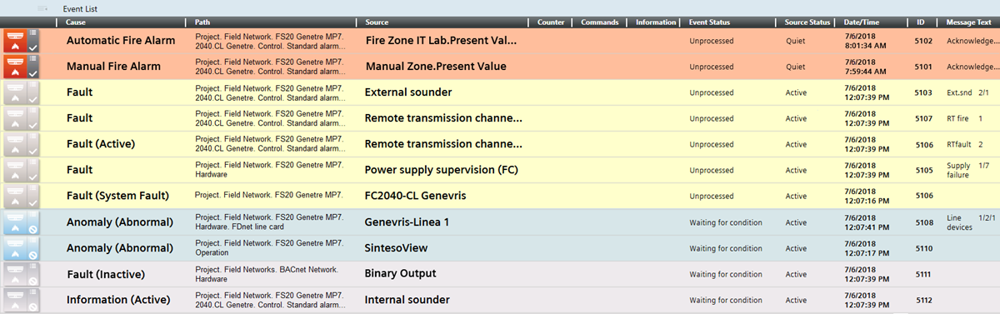

Event Descriptor
The event descriptor is the individual row in Event List, that contains all the details about an event (for example, its cause, path, source, date and time, category, discipline, event status, source status, suggested action, available command, and so on). Each event descriptor also has an event button on the left-hand side that graphically summarizes some of the most important information about that event.

The event descriptor is your starting point for handling an event. You can send event-handling commands from directly inside the event descriptor by clicking the available command icon.
The exact appearance of the event descriptor depends on the Client Profile.
Also, what columns display in the event descriptor and their order may vary depending on column customization. For instructions, see Customizing the Columns in Event List.
Note that:
- Any changes you make to the columns in Event List will also apply to the Event Detail bar and to the Investigative Treatment and Assisted Treatment windows.
- Changes to column settings will be automatically saved when you exit the Desigo CC client application, and so will persist across sessions. Note that column settings are specific to the user profile. This means that different users can have different column settings.
The following table describes the columns of the event descriptor.
Event Button | Situated on the leftmost end of each event descriptor. Graphically summarizes that specific event. For more details, see the reference section. NOTE: You cannot move, resize, or remove the Event button column. |
Cause | Description of the event followed by the condition (either numeric value or descriptive text) that caused the event. For example, For BACnet Event Enrollment (EE) events, it also indicates that the alarm limit was violated. |
Path | Indicates the entire System Browser path of the object that issued the event. The path is expressed using names or descriptions, depending on the Display mode as well as the view selected in the System Browser drop-down list. For BACnet Event Enrollment (EE) events, it displays the [ The following optional columns may also be available, for indicating the object’s path in other ways:
Depending on the System Browser views that are configured, multiple such columns may be available. How the path is expressed depends on the Display mode. |
Source | Indicates the object that issued the event. Whether the source name or description displays depends on the current display mode. For instructions, see Setting How Objects are Labeled in System Manager. For workstation-based alarms, For BACnet Event Enrollment (EE) events, the source text includes the EE instance that generated the event followed by the original source in parentheses. The following optional columns may also be available, for indicating the event source in other ways:
In any type of Source column, you can click the |
Counter | Counter for events. This column does not appear in the Investigative Treatment and Assisted Treatment windows. |
Commands | Available commands for handling this event. You can directly click the command icon/button to send the corresponding command. NOTE: You cannot remove or resize the Commands column. |
Information | The following becomes available only when the event descriptor is selected:
NOTE: You cannot resize Information column. |
 (start investigative treatment) or
(start investigative treatment) or  (start assisted treatment). For instructions, see
(start assisted treatment). For instructions, see
Event Status | Describes the status of the event. For example: |
Source Status | Describes the status of the event source: |
Date/Time | Date and time when the event occurred. Typically, event time displays with resolution hh:mm:ss. However, in special cases, it will display with resolution hh:mm:ss:ms. |
ID | Unique number that identifies the event. This number has an upper limit. The numbering restarts when this limit is reached. NOTE: In certain conditions, a fire panel alarm may correspond with multiple event IDs. |
Message Text | Text that consists of one of the following:
|
Informational Text | Text configured for the off-normal and normal conditions of the event source. It can be technical information or instructions for operators or intervention forces. The same text also displays in the Information column. |
In Process by | Indicates which user is processing an event from an installed client or Windows App client as follows:
Furthermore, for recurrences of the same event, this column displays the entire list of computer/users that are processing that event. Depending on the Client Profile, recurring events may not be available. |
Suggested action | Describes the next action the operator should take for handling the event. |
Category | Describes the event category. The events that occur in the Desigo CC management station are grouped into categories, which are color-coded by severity. The specific category names and colors employed are dependent on the event schema. |
Discipline | Describes the discipline to which the event belongs. |
Icon | Description |
Building Automation | |
Building Infrastructure | |
Energy Management | |
Fire | |
Management System | |
Notification | |
Security |
Tag | Lets you to tag/untag events, so that you can selectively show/hide them in Event List. This button will be visible but inactive in the Event Detail bar, and the Tag column will not appear in investigative/assisted treatment. |